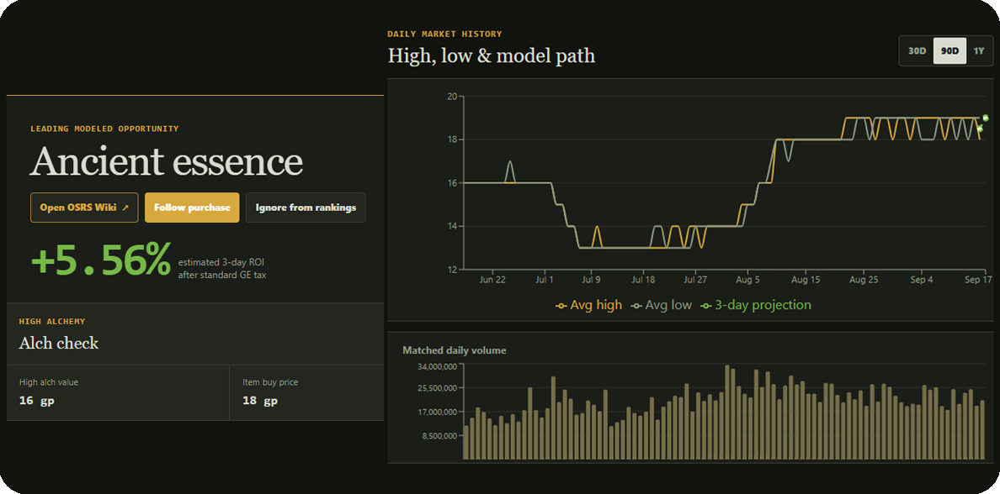

Replace images/osrs-predictor.png
01 / MARKET PREDICTION
OSRS Market
OSRS Market
Predictor
Machine learning meets the Grand Exchange. A data-driven tool built to analyze market behavior and predict potential price movement.
View on GitHub ↗